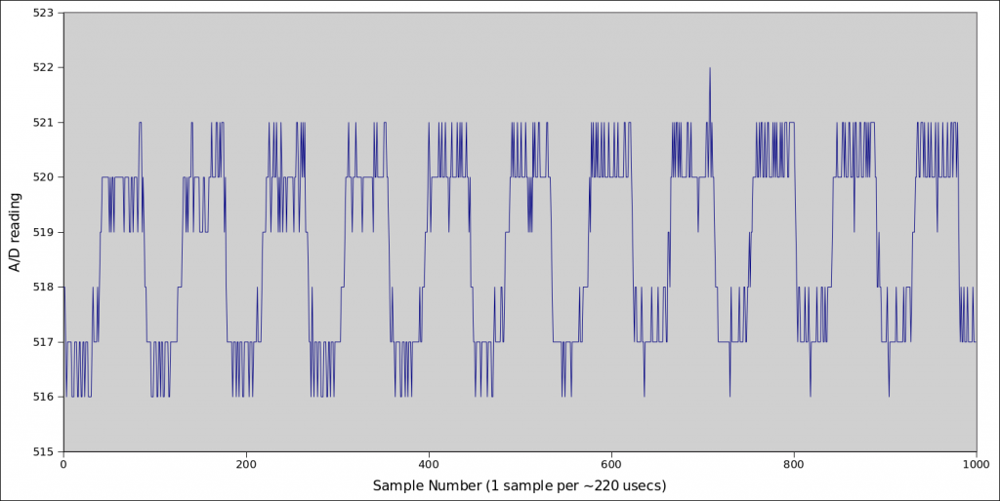
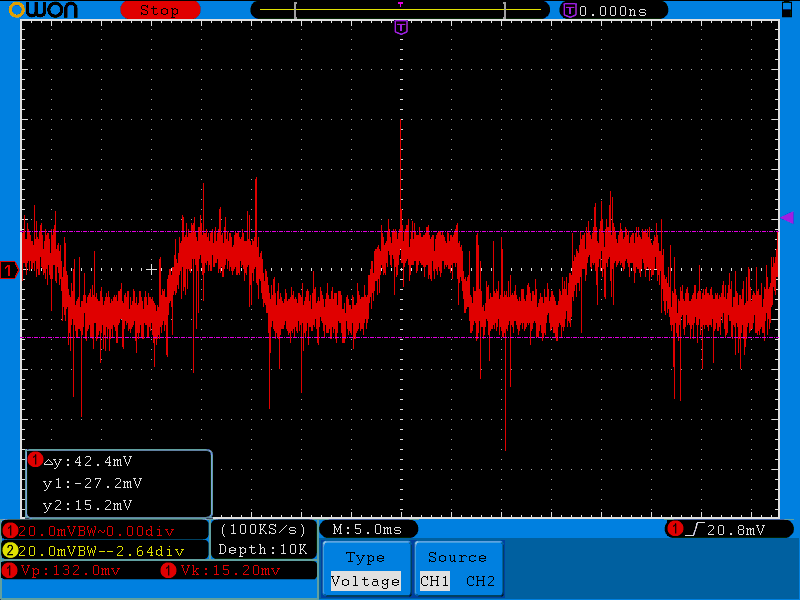
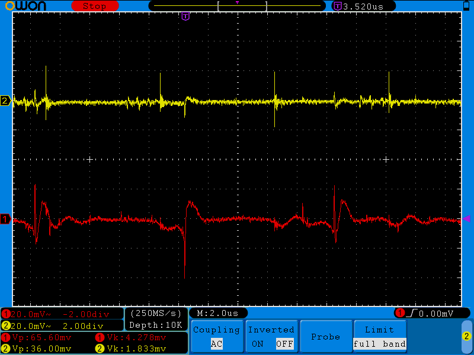
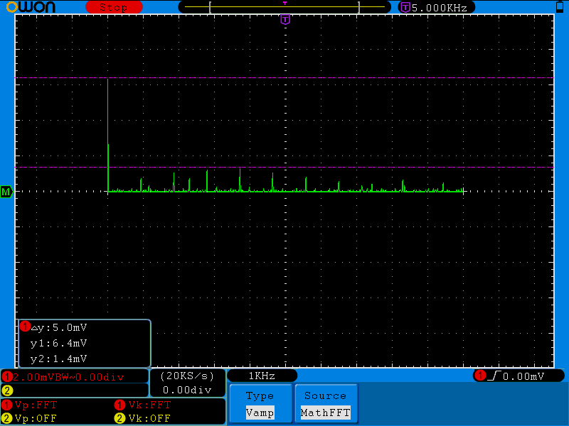
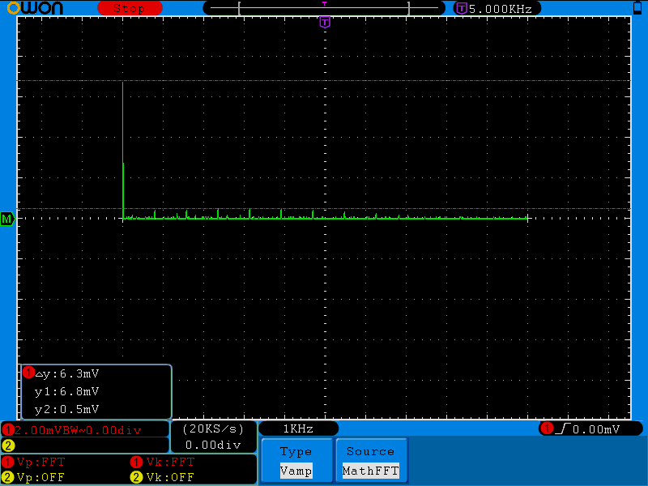
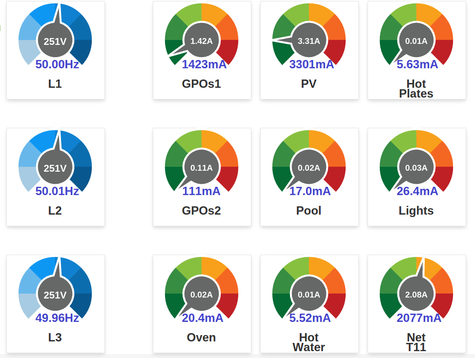
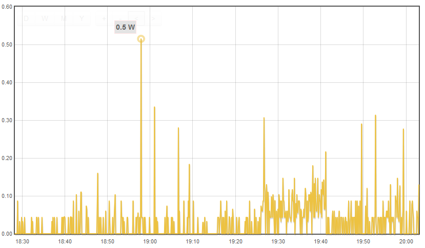
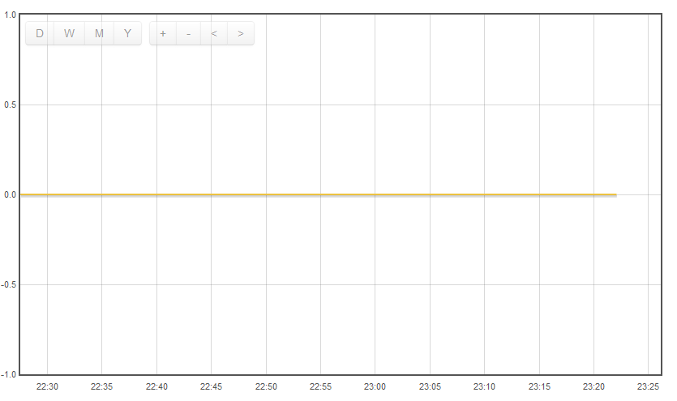

There have been a few threads of late discussing noisy signals, especially on Arduino based home-built OEM meters. It often shows up as larger than expected Irms signals when measuring very small primary loads. I built up the standard mid-rail used by most OEMers.... 470K dividers, 10uF (I used tantulum) cap all on a big noisy breadboard with long noisy leads. I then ran the attached sketch to measure nothing other than the mid-rail.... no CTs in sight. In a perfect world, with perfect resistors and no noise, you'd expect a constant value of 511/512.
I ran it all on an EtherMega; using ethernet to broadcast the results means the board is totally isolated apart from its power feed (transformer-isolated ethernet is as close to RF as I could get). The other advantage of the EtherMega is it gives me precise control over the power source via jumpers. I then set about running the sketch using various power sources. In all cases, the power supplies were a long way away from the board.
If I power it all via DC-in jack, letting the onboard regulator provide the 5V Vcc rail, the sketch spits out:
Min: 518, Max: 519, Diff: 1
I get the same result if I power the Vcc rail directly from a 5V isolated lab supply. Then I grabbed a spare 5V USB wall-wart and powered from that and I get:
Min: 516, Max: 522, Diff: 6
Enabling INSPECT_SIGNAL in the sketch let me capture 1000 samples and plot them in a spreadsheet, which produced:

The sketch reads 2 analog pins each time around to somewhat mimic a real OEM meter, so the 1000 samples take roughly 110 * 2 * 1000 usecs, or 220 msecs. And there's pretty close to exactly 11 cycles in there, so it looks like I'm getting a 50 Hz 3 A/D units (~15 mV) peak-to-peak ripple right through the readings.
I can't see it on my scope (isolated and battery powered) attached to A1 so it may be getting in via AREF or AVCC, but all the traces look much noisier when it's powered by 5V USB than via the DC-in jack. One poster recently confirmed he got rid of his low-level noise by changing how he powered his Arduino (from 5V to DC-IN) so I suspect it should be the first (and easiest) thing to try. Of course, whether it works may well depend on how the regulator used in your particular Arduino design compares with your 5V USB wall-wart. I think a lot of those 5V USB wall-warts are designed for charging batteries, so a bit of ripple doesn't matter as much as when you're feeding it straight onto your Vcc rail.
Re: Noise in Arduino based builds.
"so it may be getting in via AREF or AVCC,"
That's been my gut feeling for a long time. It's also worth dusting off Trystan's post from a long time ago: "Not all USB power adapters are created the same - highlighting importance of selecting good quality power adapters"
Re: Noise in Arduino based builds.
Yes, this one I'm experimenting with has some nasty ripple at 50Hz (and again at 150Hz) that shows up quite clearly on Vcc, AVcc, and AREF. It doesn't show up with the scope on the mid-rail because it's designed to shunt 50 Hz stuff to GND. Hence it does show up in the sketch... the signal it's measuring is stable (albeit noisy), but the reference it's using to measure it is jumping around every mains cycle.

Re: Noise in Arduino based builds.
Even for supplying Vcc to 'normal' 5V circuitry the ripple (and poor stability in general) will not be a problem, but these units are certainly not made to be used as a reference source for high-resolution AD conversions. I would always use a good linear regulator for this. But this is not a real surprise, or is it?
Re: Noise in Arduino based builds.
"But this is not a real surprise, or is it?"
Jörg, to those of us who haven't played this game before, probably YES!
I'd suggest that possibly, the real reason is the designers of the Arduino and/or its clones have neglected the analogue performance, and that will be because it is perceived as a minority interest, or on cost grounds.
Re: Noise in Arduino based builds.
Ah ok, looking at the typical schematic of an Arduino (UNO), I understand what you mean. It is possible to power these units directly from the USB port. And then Vcc and AVcc is connected to the USB voltage via a diode or MOSFET. So at least when powered from the PC during development the problem of unstable voltage supply will be there.
Sorry for my hasty comment, but I never thought that you would use the USB connector for powering the Arduino in its final application. There is always the separate power supply jack with a linear regulator behind it which would be a much better choice (but then it is not possible to use one of the super-cheap 5V USB wall warts..... everything comes at a price!)
Re: Noise in Arduino based builds.
Actually, I'm with Jörg on this one. I've got a box full of various cheap-n-nasty Arduinos here, and I can't find a single one that doesn't have brilliant low level AtoD performance. Provided the end-user and the board designer follow a few basic rules it's really pretty easy to get right. The end-user needs to provide a nice low impedance source to measure, and a clean Vcc. The board designer needs to keep their Vcc and GND planes as low impedance as possible.
I suspect the main reason why people report more noise on Arduino based builds is that they have more options on how to power them, and make poor choices. I'll bet good money that if you were to marry the USB wall-wart above with an emonTx, it would impact it exactly the same as it does any Arduino.
Clearly breadboard and jumper wires are noisier than veriboard, which is noisier than a shield, which is noisier than soldering components onto a two layer board, which is noisier than soldering components onto a four layer board with dedicated Vcc and GND planes. But wherever you live in that build spectrum, you can get surprisingly good results if you take just a little bit of care.
Re: Noise in Arduino based builds.
By "Yes, you should be surprised", I meant that there must be many to whom a power supply is a power supply. End of story. They would not appreciate the difference between a switcher and linear - unless maybe they've read that linear are lossy and waste energy and therefore switchers must clearly be "better".
As you say, it's not hard to get right, or close, if you know what you're doing and follow the basic rules, but many don't know - and we really shouldn't expect them to know - what those rules are. But we have to recognise that we're special in demanding the absolute maximum performance out of the analogue side. That's no reason to take away the flexibility that different power sources offer for the sake of a feature (the analogue inputs) that a good proportion of users probably will never want.
Maybe one day someone should write up a fully engineered Arduino-based monitor project, mentioning all these things, because a lot of people appear to take the "demo" breadboard design illustrations as the start and the end of their design and are then disappointed with the performance.
[Acknowledging here Robin's early diverters, in which I think he's always used a linear supply regulator.]
Re: Noise in Arduino based builds.
I meant that there must be many to whom a power supply is a power supply. End of story.
Yes, and it's for those people that I posted this thread. When someone does prefer to build their own monitor using an Arduino, and experiences noise problems, we can point them at this thread as a starter, rather than just tell them to give up and buy an emonTx.
They would not appreciate the difference between a switcher and linear
I don't think we should write off all SMPS. You can certainly build a clean, extremely low ripple SMPS, but you're unlikely to find it in cheap USB wall-wart. But for the purpose of this discussion, I agree, it's far simpler to just tell them to use the DC-in jack. Most will be unequipped to investigate the suitability of a 5V SMPS.
I assume the hobbyists that want to build these monitors with an Arduino are doing so partly for the learning experience, and learning about noise and power supply options are part of that learning experience. I for one am happy to help them where I can, rather than just redirect them to the shop. Even if that help is no more sophisticated than "Use the DC-in jack, and lower the mid-rail divider Rs". Hopefully Gerardo will be able to report back how well that works (http://openenergymonitor.org/emon/node/10097). His Leonardo has great potential, as it even includes the Atmel recommended LC network on AVCC. I haven't looked at the latest OEM schematics, but I think I first pointed out that was missing over a year ago.
Re: Noise in Arduino based builds.
Very good idea!
I was not aware of the fact that many people will use the USB as main power supply and others might no be aware of the possible problems arising from this. So this thread was very helpful to sort this out!
Re: Noise in Arduino based builds.
Here are some pictures of the Atmel recommended LC network doing its stuff on AVcc. The red trace is the Vcc rail being driven directly by a SMPS (albeit one with much lower ripple than the USB wall-wart above). The yellow trace is AVcc.
PtoP ripple has dropped from 65.6mV to 36mV and RMS ripple has dropped from 4.3mV to 1.8mV, and the duration of those disturbances are way way shorter. AVcc is the voltage it's going to be using as a reference while it's trying to measure your voltage, and without that filter, you'll be using the red.

You can see in the FFTs it's really given the higher frequency stuff a haircut:


Re: Noise in Arduino based builds.
[Acknowledging here Robin's early diverters, in which I think he's always used a linear supply regulator.]
Indeed, he wouldn't know how to build a power supply in any other way!
Sometimes, the amount of background power that I see is nil; at other times, it can be up to a Watt. It all seems to depend on where the quiescent level of the current sensor is sitting within the ADC's range. Maybe there can be an element of noise on the PSU too.
Unlike the emonTx, my own PCBs don't have any connection to the power that appears via the programming lead.
Re: Noise in Arduino based builds.
Actually, Power is a bit easier to get right. If the noise isn't correlated to V (unlike that USB wall-wart noise above) then it won't show up in Power. Irms is a better test of how noise-free your input stage is.
Of all my circuits, I think the only two that are truly open circuit when they're not being used are the Hot Water and Hot Plates. The Pool, Lights and Oven all have some small background electronics running. I've not been able to get the open-circuit ones below 6mA (just 100uV at the CT terminals), and that does seem to be coming in from the CTs themselves. Clamping all 9 circuits in a confined space means the CTs can't help but be fairly close to other conductors, so I supsect there's some pick-up there.

And remember, even if your power supply delivers a perfect DC Vcc to your board, all that gate switching is going to introduce noise to the Vcc rail. The lower the source impedance of your Vcc, and the lower the impedance of your Vcc and GND planes, the less likely you are to benefit from various hardware filters to keep that stuff out of the critical analog circuitry.
Re: Noise in Arduino based builds.
I've been doing some tests with a regular arduino on my bench. I use an ethernet shield and tought it could generate noise.
So i measure working conditions with CT connected but no voltage passing on cable, in some schenarios.
1 - Powered only from PC USB i get up to 7W noise on no power. ADC jumps all arround.
2 - Tested without ethernet shield, no difference.
3 - Powered with a smps power supply 9V on VIN, it does reduce noise a bit but still some values read 509, 514.
4 - Powered with a cheap unregulated ferromagnetic transformer 9VDC, still ethernet and USB connected and i get a constant 511 value.
Noise comes from the power supply!
Arduino program used to test raw adc values:
int sensorValue = 0; // value read from the pot void setup() { Serial.begin(9600); } void loop() { int x; for (x=1; x<4 ; x++ ) { // read the analog in value: sensorValue = analogRead(x); // print the results to the serial monitor: Serial.print("\tADC" ); Serial.print(x); Serial.print(" sensor = " ); Serial.print(sensorValue); delay(1); } Serial.println(); }Re: Noise in Arduino based builds.
It would be interesting if you could repeat step 3 but with nothing connected to the USB (you can use snippets out of my sketch above to transmit your results over ethernet rather than USB).
It sounds like you could be getting some ground currents from your SMPS, through your Arduino, out the USB port into your PC to earth. If you take a typical regulated SMPS, plug it into an outlet in your kitchen, set your multimeter to AC Volts and then measure between either output of the SMPS (-ve or +ve) and your earthed kitchen sink, you'll see about 90VAC. There's only uA of current behind it, so it's not as scarey as it sounds.
If your Arduino is being powered by such a SMPS, your entire Arduino will be sitting at 90VAC. Once you connect your Arduino to your PC via USB, you're grounding it, and giving that AC a path to earth.
P.S. The other thing you can do is fetch the readings you're getting and plot them in a spreadsheet, assuming your Arduino has enough RAM (again feel free to use snippets from the sketch above). Your Arduino is a pretty sensitive, albeit low-bandwidth, oscilloscope. A good starting point for determining the source of noise is seeing what it looks like.
P.P.S Do you have a schematic for your particular Arduino? You really need to look at how it behaves when you offer it two simultaneous power supplies (DC-in and USB). Power is one area where Arduinos vary a lot from model to model.
Re: Noise in Arduino based builds.
After long term test with the iron core transformer i do get some noise. not much, <0.1W noise average that occurs ocasional. I can live with that.
dBC what are your noise figures with no load?
Arduino is a duemilanove: http://arduino.cc/en/uploads/Main/arduino-duemilanove-schematic.pdf
Long term log of W with no load connected, line is powered and using same arduino, posting by ethernet, still attached to usb and powered by cheap iron core transformer.
Noise could come from the CT picking up high frequency noise on the line, see the strange change at 19:28-19:40.
Edit: Confirmed, comes from CT.
Edit: This is VA, not Watt. Its measured current * 220V (fixed constant). Can get current dividing by 220. So the spike of 0.5W / 220 = 2.27mA measured.

I will do other test with line off.
Edit: Done. One hour test, same conditions, but this time CT is not plugged on arduino. No noise this time.

Re: Noise in Arduino based builds.
dBC what are your noise figures with no load?
It depends on the stimulus:
No CT connected: 0W (real), 4.4mA
CT (lab) connected, CT clamped around a zero-current carrying lead: 0W (real), 3.91mA
CT (fusebox) connected, CT clamped around a zero-current carrying lead: 1.2W (real), 7.92mA
That last one varies quite a bit depending on what all the other nearby circuits are doing, and is coming in via the CT. The fact that it shows up as Real Power tells me it's not random noise, but rather is sync'd up with V.
I find it helpful to distinguish between "monitor noise", i.e. what does my monitor report when the inputs are missing (or shorted) and "sensor noise", i.e. by how much does it increase when I connect the CT. In my case my monitor noise is quite low, my sensor noise is quite low in the lab, but relatively high in the fusebox jammed in beside all those other current carrying conductors. By distinguishing like that, you can focus your efforts in the right location. My 9 CTs are all very close together, and their leads (unshielded twisted pairs) are all jammed into a conduit together, and run 2.2m to my monitor, so there's opportunity for pick-up there too.
Arduino is a duemilanove: http://arduino.cc/en/uploads/Main/arduino-duemilanove-schematic.pdf
It looks like they've attempted (somewhat unsuccessfully) to auto-select who drives the Vcc rail by the presence of any voltage on the DC-in jack. There's an interesting thread on that design here: http://forum.pololu.com/viewtopic.php?f=3&t=3083 that you should probably experiment with. See if yours too spits 5V back out the USB while being powered by DC-IN. You can see why, when working at this level, you really need to consider every Arduino model as unique... they all like to do power differently. I tend to look out for Arduinos that use physical jumpers for power-selection, then I know exactly how I'm powering the board.
Noise could come from the CT picking up high frequency noise on the line
Or even 50Hz noise on the line (and nearby lines), which is what's happening on mine.
[EDIT] If for some reason you believe yours is high frequency noise, then you may be able to combat that with a hardware filter on your inputs. Because my cross-talk arrives at the CT screw terminals looking exactly like a genuine low-level signal, it's impossible to do much about it at the monitor end without taking out the ability to pick up real low-level signals. For channels that I know will only have big loads on them (hot water and hot plates) I've just added an anti-creep feature in software.... "if(real_power < 5W) real_power = 0". To do better than that would require me to get back there and try to move CTs around, or change how I run their leads, neither of which I'm particularly enthused about.
Re: Noise in Arduino based builds.
Yeap, it's quite expected to have some noise in your conditions. But still acceptable.
I remember reading some appnote that below a small threshold (few watts) some digital company meters don't increment.
I always used shielded audio cable on my CT's so it must be a litle better.
New test: same conditions but CT on the air with no wire passing through.
Can induce noise by passing metalic objects near by or cell phone, but most of the time it measures zero with one rare sporadic small spike here and there >20 minutes appart.
Repeated the same test as before, line connected, no load. Difference is time of test, late night 1 o'clock. it still had noise but much spread in time. My conclusion is that it's something picked up from noisy lines. Maybe even RF picked up by the electric wire is being detected.
So to conclude, excluding pcb design (that is not the case o arduino diecimila), major sources of noise can be :
1 - Power supply
2 - Picked up by connecting wiring
3 - Picked up by CT itself from line noise
Re: Noise in Arduino based builds.
Yeh, in my case I think it's just a natural hazard of doing per-circuit monitoring. If you're doing whole-house monitoring, you're never likely to be clamped around zero anyway (except in a much more controlled lab environment, where I do read 0W). With per-breaker monitoring, zero currents are more common and that CT is likely to be quite close to a conductor/CT that is conducting/measuring high currents on an adjacent circuit.
Re: Noise in Arduino based builds.
Currently I am powering the emonTX via the USB port on the board, but via a wall plug and not a PC USB port. Given that the USB port on board the emonTX goes through the regulator does that mean I have the least noise in the system?
Will the emonTX benefit from being powered by one of those ultra-low noise psu? How will the onboard regulator affect an already ultra-low noise input?
Re: Noise in Arduino based builds.
I would imagine the on-board regulator would clean up any ripple from your wall-wart. Most of the discussion above was comparing using an Arduino's DC-in jack (good) Vs using the USB (bad) but the real reason the former is good is because it uses the on-board regulator while the latter jams the often ripply USB's 5V signal straight onto the Vcc rail (on most Arduinos). If you've got an on-board regulator after your USB 5V input, then it too becomes a good option.
Re: Noise in Arduino based builds.
Hi, i registered on this forum to get some help but found this thread that is exaclty what i am looking for! Thank you all for the detailed explanation.
I'm struggling to get the least noise on my custom build emonTX and am at a point where i need your help:
Thuis is my build:
Arduino MEGA 1280
1x Voltage sensor (ADC 0)
8X CT Analog channels (ADC 1-8)
Burden resistor of the CT at 68 OHM to increase resolution at 0-50AMP
Calibration values on the sketch calculated accordingly (not yet measured to elimenate tolerances)
Ethernet with ENC28J60
The SW code is the basic one with discrete sampling and posting direcly to emoncms.
So to keep history short this is what i did and where i am, regarding supplying power to my custom emonTX:
From the three tests i can confirm that USB is no good ( should have searched this thread earlier, though!)
The channel above is not connected to any CT. Im am very close to ZERO Watt reading and would be happy if all the power readings were positive. Why do i have negative power readings and how can i eliminate them?
BR
cab123
Re: Noise in Arduino based builds.
I'm only just able to read the y-axis scale on the zoomed in look at your 3rd and least noisy solution, but it looks like it's about 0.02W per division? If that's true, then I think you can congratulate yourself on a noise-free build and move on. That's about as good as I've seen anywhere.
Why would you expect the noise to only produce positive power readings? It looks like your noise is genuine white noise with no particular correlation to your V sine wave which is one reason the readings are so small. The tiny part of the broad-spectrum noise that is at 50Hz is as much in-phase with V as it is out of phase with V, hence it swings either side of 0, and gives you an excellent average of 0.
Unless I'm mis-reading your graphic, I think your system is working brilliantly.
Re: Noise in Arduino based builds.
Hi dBC, sorry for the poor quality image, it's 0,025W/div. As you explain it i sounds absolutely fine, somehow i thought i was making some silly mistake. Thank you for that! I notice that powering the system through the DC input the board gets hotter than USB because of the on-board voltage regulators. The minimum DC in that produces a stable 5V on the arduino pins is about 7,5V. Anything higher than that just makes the regulators work harder and generate more heat.
I have been reading this and other threads with more attention and i guess that it would be just fine if i could set a threshold on the code to get rid of the noise and the negative readings of "-0 Watt". Something around -1W and 1W would be defaulted to 0.
I think it would be a nice addon to the code to be able to set a noise threshold per CT.
BR
Re: Noise in Arduino based builds.
What option to log data you used in emoncms to gather this graph and what data you were feeding from you rig (amps or watts)?
please advise,
Ramunas
Re: Noise in Arduino based builds.
Hi!
the emoncms graphics were created from the simplest form, a modified emontx is reporting power samples periodically and emoncms is logging the feed data that receives.
hope it helps
br